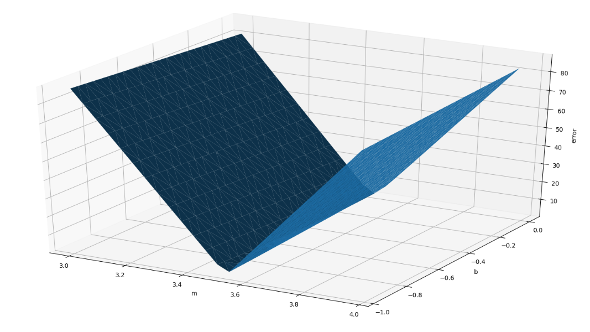

Crafting AIA Developer's Guide to Machine LearningBarry S. StahlSolution Architect & Developer@bsstahl@cognitiveinheritance.comhttps://CognitiveInheritance.com |

|
Favorite Physicists & Mathematicians
Favorite Physicists
Other notables: Stephen Hawking, Edwin Hubble, Leonard Susskind, Christiaan Huygens |
Favorite Mathematicians
Other notables: Daphne Koller, Grady Booch, Leonardo Fibonacci, Evelyn Berezin, Benoit Mandelbrot |
Some OSS Projects I Run
- Liquid Victor : Media tracking and aggregation [used to assemble this presentation]
- Prehensile Pony-Tail : A static site generator built in c#
- TestHelperExtensions : A set of extension methods helpful when building unit tests
- Conference Scheduler : A conference schedule optimizer
- IntentBot : A microservices framework for creating conversational bots on top of Bot Framework
- LiquidNun : Library of abstractions and implementations for loosely-coupled applications
- Toastmasters Agenda : A c# library and website for generating agenda's for Toastmasters meetings
- ProtoBuf Data Mapper : A c# library for mapping and transforming ProtoBuf messages
Fediverse Supporter
|

|
http://GiveCamp.org

Achievement Unlocked

Minimizing Error
Simple Linear Model
2-Input Linear Model
Multiple-Input Linear Model
Multi-Layer Perceptron
Crafting AI Models
- Designing the Model Structure
- Define Inputs and Outputs
- Determine Layers and Neurons
- Select Activation Function
- Training the Model
- Cost Function (Mean Squared Error)
- Gradient Descent Optimization
- Adjust Hyperparameters (e.g. learning rate)
- These are the critical concepts for all ML tooling
- TensorFlow, Keras, ML.Net, etc.
- Master these concepts to harness any ML tool suite effectively
Linear Model
|
ML's Linear Linchpin
|
Mathematics
|

|
Model Parameters
|

|
Error Function
The weight (m) often has a greater effect on the error than the bias (b) |
 |
Training the Model
|
Gradient Descent
|
Linear Regression Demos

|
Railroad Times Model
Train & Test Cycle
Voting Dataset
Voting Data
Voting Model
Linear Separability
Linear Separability
Not Linearly Separable
Activation
|

Feature Analysis
|
Feature Engineering
|

|
Features of the Voting Model
|
Enhancing the Voting Model
|
BackPropagation
|
Resources
Chain Rule of Calculus
To find the derivative of a composite function
h(x) = f(g(x)), you take the derivative of the outer functionfwith respect to the inner functiong, and multiply it by the derivative of the inner functiongwith respect tox
If
h(x)=f(g(x)), then:dh/dx=df/dg*dg/dx
How changes in
xaffect the outputhby accounting for howxinfluencesgand howginfluencesfEnables calculation of gradients for each layer by propagating errors backward through the network
Essential for training deep networks, as it helps adjust weights and biases to minimize prediction error
Overfitting
When a neural network learns the training data too well, capturing noise rather than the underlying pattern
- Produces a model that performs well on training data but poorly on other data
- Can happen when the model is too complex relative to the dataset
- Excessive parameters allow it to fit even noise within the data
- Solutions include:
- Regularization: Add a penalty to the loss function
- L1 (Lasso): Performs feature selection by setting some coefficients to zero
- L2 (Ridge): Disperses the weights across all features
- Dropout: Randomly drop neurons during training to force the network to learn more robust features
- Early stopping: Stop training when performance on a validation set starts to degrade
- Data augmentation: Diversify the training set by applying transformations to the input data
- Weight initialization: Better initialization to avoid configurations that lead to overfitting
- Batch normalization: Normalize inputs on mini-batches to reduce fluctuations
- Regularization: Add a penalty to the loss function
Xavier/Glorot Initialization
Helps prevent gradients from becoming too small or large, aiding convergence
// Xavier/Glorot initialization for better gradient flow
int inputWeightCount = inputCount * hiddenLayerNodes;
int totalWeightCount = inputWeightCount + hiddenLayerNodes;
var weightScale = Math.Sqrt(2.0 / inputWeightCount);
startingWeights = new double[totalWeightCount];
for (int i = 0; i < startingWeights.Length; i++)
startingWeights[i] = _random.GetRandomDouble(-weightScale, weightScale);
- Balances the signal through layers
- Prevents activation function saturation
- Ideal for symmetric activations (e.g., sigmoid or hyperbolic tangent)